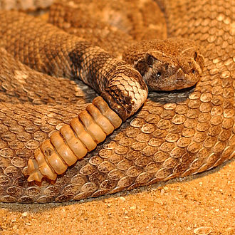
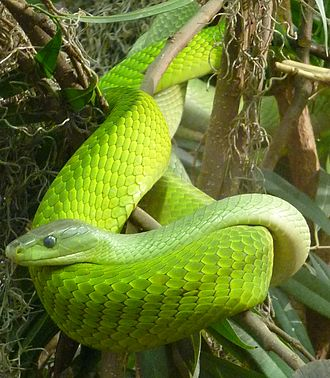
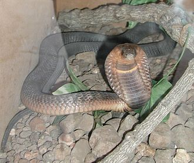
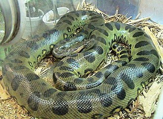

Snakes are some of the most feared animals, up there with spiders and centipedes for many. Some people even suffer from ophidiophobia, an intense fear of snakes. This fear is not unfounded. Our bodies have evolved to fear animals that could potentially harm us, and some snakes certainly can be deadly.
| Name | Description | At a glance |
|---|---|---|
| Rattlesnakes | Rattlesnakes are known for their diamond-shaped heads and sand-like, triangle-patterned skin. |  |
| Mambas | In the trees of sub-Saharan Africa in the forests and savannas live the graceful mambas. |  |
| Cobras | Cobras are large, venomous snakes found in India, southeast and southern Asia, and Africa. |  |
| Anaconda | Anacondas are water loving snakes native to the tropical forest of South America. |  |